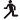

| 2012/02 24 Fri | 83回目*marika |
いつも読んでくださってる方、
初めて読んでくださった方、
コメントしてくださった方、
ありがとうございます‼
まりかよん。
23日は銀座ソニービルで
ゆったん、あみ、ちはると
デビュー記念握手会でした


楽しかったーーー、xD
誕生日。
乃木坂46デビュー記念日。
そして、23日握手会。
デビュー、16歳。
初の握手会でした。
久しぶりの握手会。
初めての握手会。
みなさん。いかがだったでしょうか⁇
にぎにぎ

てれ。
誕生日のお祝い、
ありがとうございました‼
びっくりして感動した><
嬉しすぎて...><
感動してことばが出ませんでした。
本当にうれしかった。
沢山のお手紙、プレゼント
直接言ってくださるだけでも
じゅうぶんうれしいのに。
私はみなさんに
何か返せてるのかな?
私の気持ち、
届いてるのかな...⁇
私は、
いつも心優しくて
あったかいみなさんが
めちゃめちゃすきです。
だいすきです‼
xoxo
最高の誕生日をありがとう。
幸せ。
＊＊＊
みなさん‼
デビューシングル。
お手元に届きましたか⁇
早速、コメントで個人pvの感動がっっっ

伊藤万理華×柳沢翔監督
『ナイフ』
本当に素敵な作品に
なっています。
自分は実は、
血とか傷、すきだったり←←
しゃしん載せたいな...
でも、まだ見ていない方に
ネタバラシになっちゃう。
ぜひ、見てください♪♫
TypeCに収録されています。
＊＊＊
では、今日も元気にがんばりまりか★★

髪がいい感じのナチュラル巻き

まだまだ寒いので
あったかくしてください。
デコメ使えて高まりか笑

ベビたん*****bA by marika
コメント(81)
2012/02/24 01:48